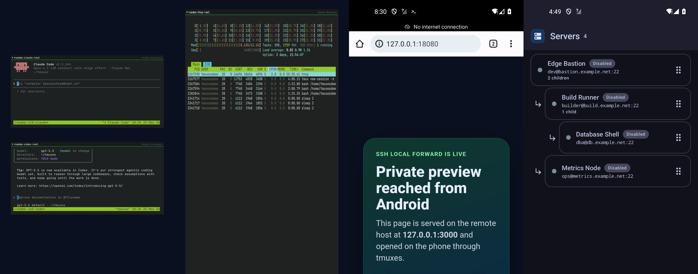
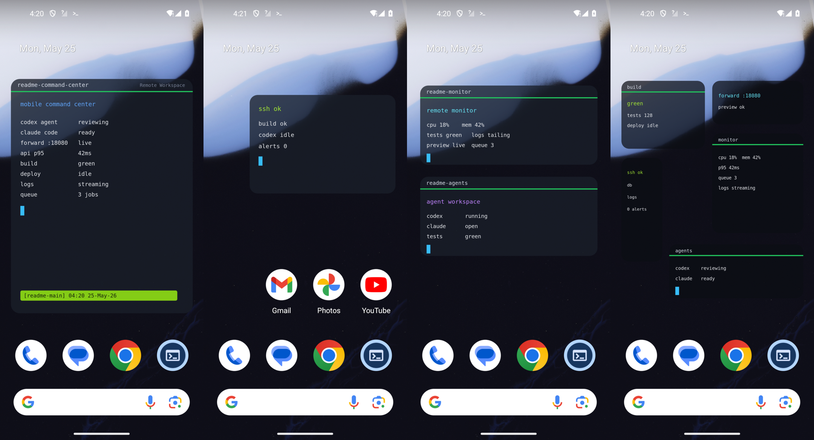
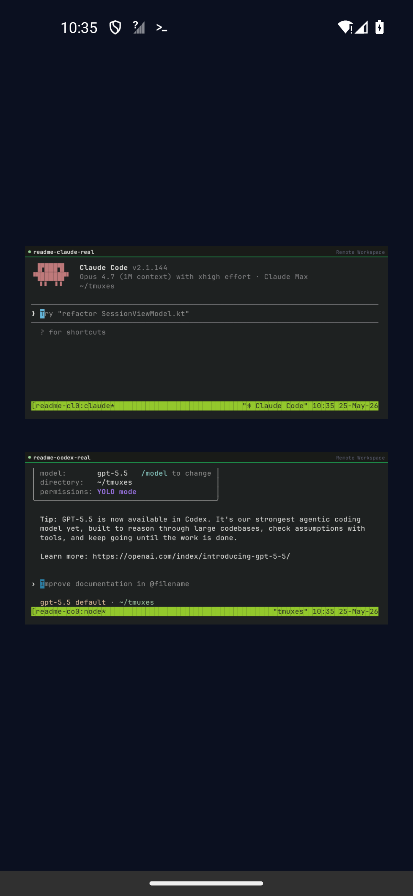
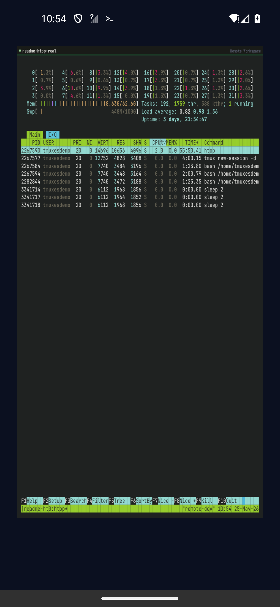
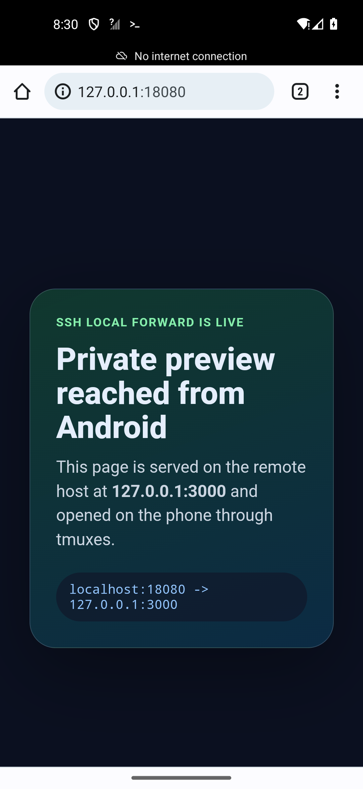
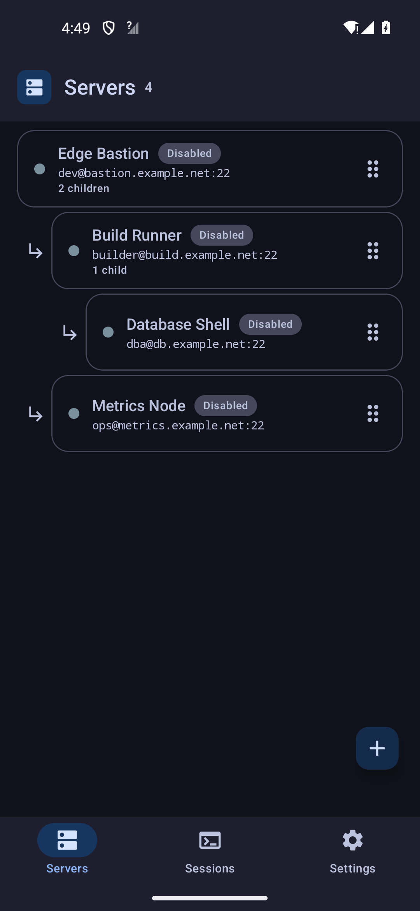

01
tmux 是骨架tmux owns continuity
Shell、编辑器、日志和构建任务留在服务器。手机、平板、桌面 attach 同一个 session。Shells, editors, logs, and builds live on the server. Phone, tablet, and desktop attach to the same session.
tmuxes 不是另一个应急 SSH 客户端。它把 Android 变成远程机器的长期控制面板：tmux session 留在服务器，CLI 工具保持原生，桌面磁贴显示实时终端，SSH 转发和父子服务器拓扑都在同一个可信工作区里。 tmuxes is not another emergency SSH client. It turns Android into a durable control panel for remote machines: tmux sessions live on the server, CLI tools stay native, launcher widgets render real terminal output, and forwarding plus parent-child server topology share one trusted workspace.

真实 Claude Code 与 Codex 桌面磁贴、全屏 htop、能看到结果的 SSH Forwarding、父子服务器拓扑。 Real Claude Code and Codex widgets, full-screen htop, working SSH forwarding, and parent-child server topology.
tmuxes 的设计重心不是功能堆叠，而是一个连续的工作模型：远端负责持久性，Android 负责可见性、输入和控制。 tmuxes is designed around one continuous model: the remote machine owns durability, while Android owns visibility, input, and control.
Shell、编辑器、日志和构建任务留在服务器。手机、平板、桌面 attach 同一个 session。Shells, editors, logs, and builds live on the server. Phone, tablet, and desktop attach to the same session.
不是固定卡片，而是实时终端表面。脚本、watch、TUI、agent 状态都能成为 Android 桌面的一部分。Not fixed cards, but live terminal surfaces. Scripts, watch commands, TUIs, and agent status can live on the launcher.
Local/remote forwarding 与终端共享同一台服务器、host key 信任和连接状态。Local and remote forwarding share the same server, host-key trust, and connection state as the terminal.
堡垒机、内网、父子服务器不是一串扁平主机名，而是能理解、能重排、能恢复的关系。Bastions, private networks, and child servers are not flattened into names; they are visible, reorderable relationships.
打开应用常常是慢路径。tmuxes 让你在桌面上直接看到构建、日志、监控、队列、agent 进度或项目自定义 TUI。真正的可编程能力不是来自某个 widget SDK，而是来自你已经会写的命令行。 Opening the app is often the slow path. tmuxes lets builds, logs, monitors, queues, agent progress, and project-specific TUIs stay visible on the launcher. The programmable surface is not a widget SDK; it is the command line you already know.

全屏命令中心、和应用图标共存、上下堆叠 session、多尺寸状态面板。 Full-screen command center, app-icon coexistence, stacked sessions, and dense mixed-size dashboards.
# Bind a launcher surface to real terminal output
server: prod-bastion
session: agent-dashboard
appearance:
opacity: 0.78
fontSizeSp: 12
command:
- tmux
- new-session
- -A
- -s
- agent-dashboard
- ./scripts/mobile-status-boardCI 状态、服务器指标、队列长度、部署进度、agent 输出、IoT 面板、家庭实验室监控——只要终端能输出，tmuxes 就能把它变成桌面状态。 CI status, server metrics, queue depth, deployment progress, agent output, IoT panels, homelab monitoring—if the terminal can print it, tmuxes can make it ambient.
堡垒机、实验室网络、VPN 边缘、云内网、家庭服务器都可以用父子树表达。父服务器提供 ProxyJump 风格通道；子服务器仍然保留自己的 SSH 客户端、host-key 校验、keepalive、forwarding 规则、tmux session 和凭据。 Bastions, lab networks, VPN edges, cloud private networks, and homelabs can be represented as parent-child trees. The parent provides a ProxyJump-style path while the child keeps its own SSH client, host-key verification, keepalive, forwarding rules, tmux sessions, and credentials.

Claude Code 和 Codex 作为真实 CLI 运行在 tmux 中，再被渲染成桌面磁贴。Claude Code and Codex run as real CLI tools in tmux, then render as launcher widgets.

全屏 htop widget 是真实 tmux session。资源监控、TUI、状态面板都能放到桌面。A full-screen htop widget is a real tmux session. Monitors, TUIs, and dashboards can live on the launcher.

远端私有 preview 通过 local SSH forward，在手机浏览器中打开。A private remote preview opens in the phone browser through a local SSH forward.

父子服务器把堡垒机、内网机器和嵌套主机的关系直接表达出来。Parent-child servers show bastions, private hosts, and nested machines as real relationships.
方向键、Home、End、Tab、Delete、Enter、IME 组合输入、中文日文输入、语音输入、粘贴、选择复制、bracketed paste、modifier 和 Fn 页面都应该按终端语义正确工作。 Arrows, Home, End, Tab, Delete, Enter, IME composition, Chinese and Japanese input, voice dictation, paste, selection copy, bracketed paste, modifiers, and Fn pages should all behave with terminal semantics.
欢迎贡献 first-run onboarding、更多 Linux shell 适配、Windows/psmux 探索、CLI-native vibe-coding 示例、widget-focused TUI，以及未来 iOS 方向。 Contributions are welcome around first-run onboarding, more Linux shells, Windows through psmux, CLI-native vibe-coding examples, widget-focused TUIs, and future iOS work.